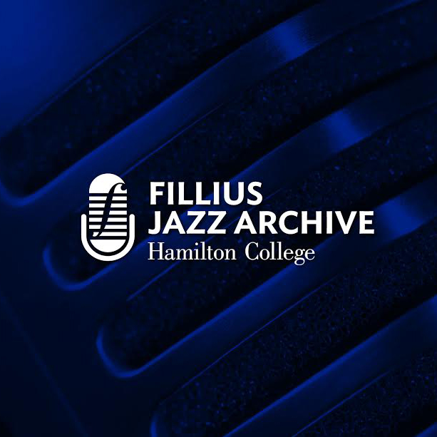

Established in 1995, The Milton and Nelma Fillius Jazz Archive at Hamilton College holds a collection of videotaped interviews, numbering over 500 entries, with jazz musicians, arrangers, writers and critics. The collection generally focuses on artists associated with mainstream jazz and the swing era. Members of bands led by Count Basie, Duke Ellington, Woody Herman, Benny Goodman, Stan Kenton and the Dorsey brothers are well represented as well as soloists and leaders of small ensembles dating from the 1930s. This oral history project was conceived by Milton F. Fillius Jr. ’44 with the support of jazz singer Joe Williams.
Interviews were transcribed by Romy Britell and videotaped by Tim Hicks.
Rights
The Fillius Jazz Archive at Hamilton College has made a reasonable effort to secure permission from the interviewees to make these materials available to the public. Use of these materials by other parties is subject to the fair use doctrine in United States copyright law (Title 17, Chapter 1, Section 107), which states that use by “reproduction in copies or phonorecords or by any other means specified by that section [106 and 106A], for purposes such as criticism, comment, news reporting, teaching (including multiple copies for classroom use), scholarship, or research, is not an infringement of copyright." Any use that does not fall within fair use must be cleared with the rightsholder. For assistance in contacting the rights holder please contact the Fillius Jazz Archive, Hamilton College, 198 College Hill Road, Clinton, NY 13323 (phone: 315-859-4071)
Institutional Owner
Hamilton College Library Digital Collections